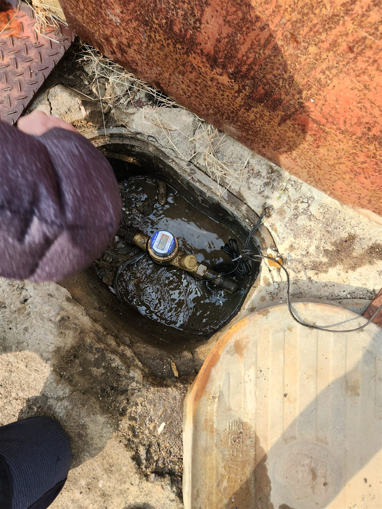
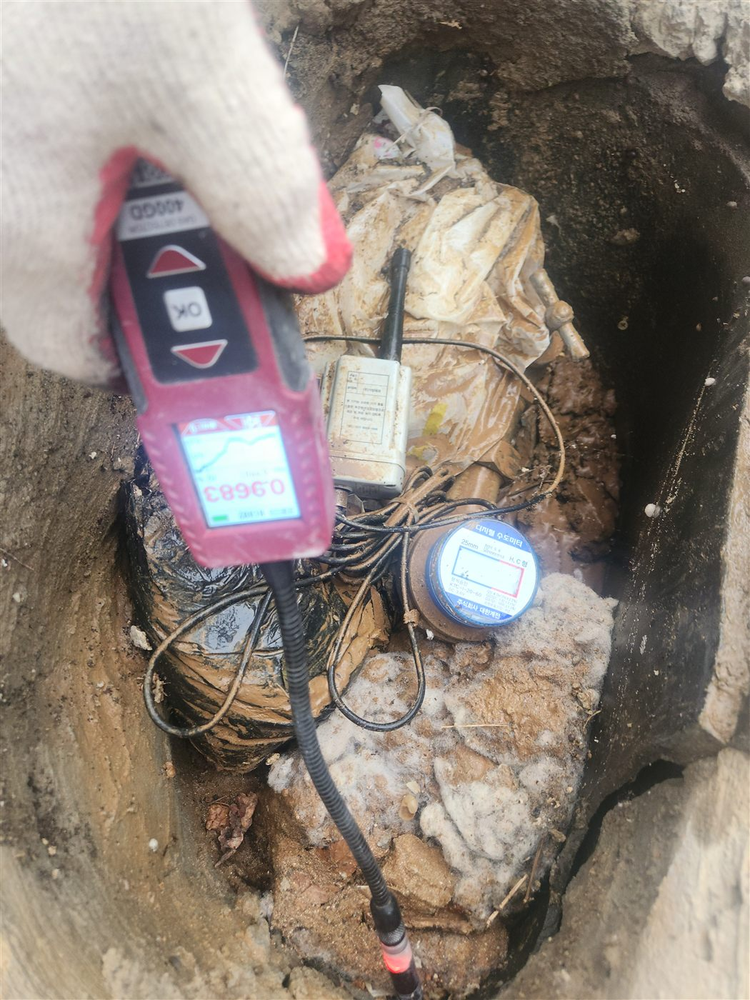
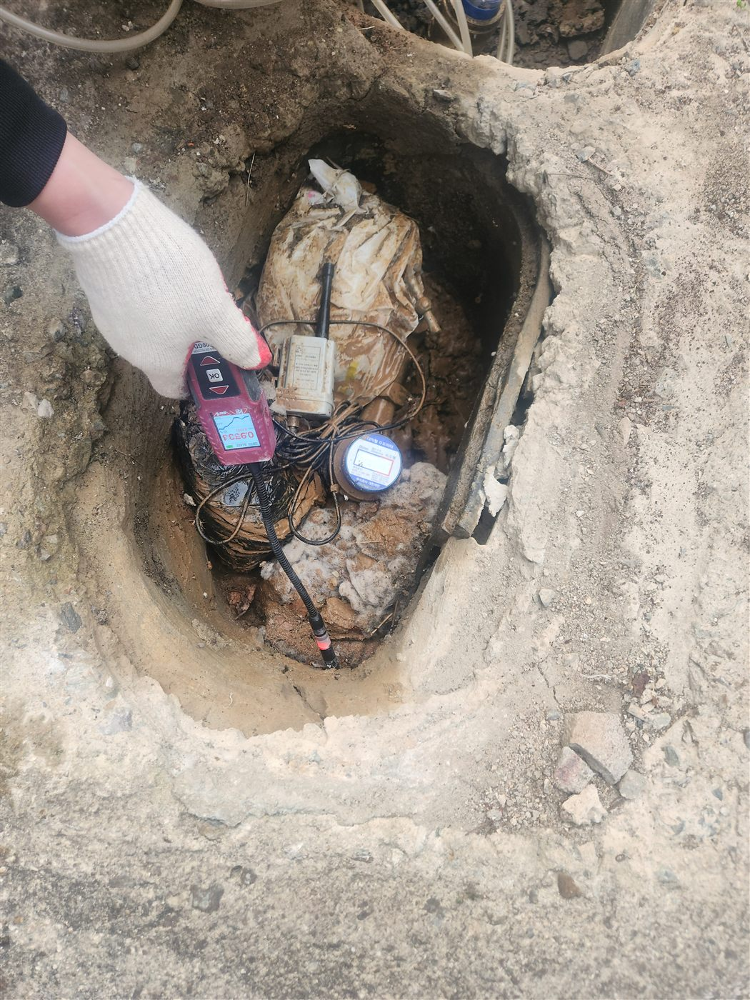
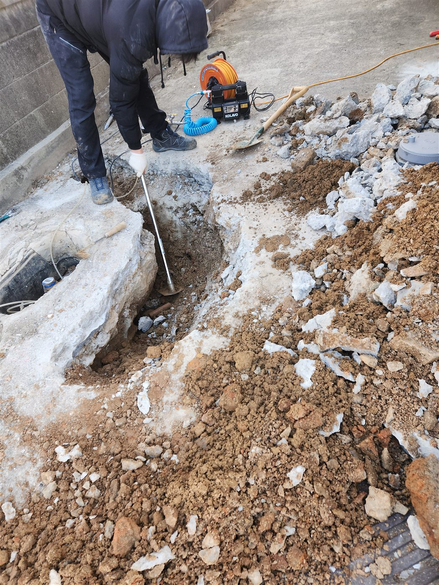
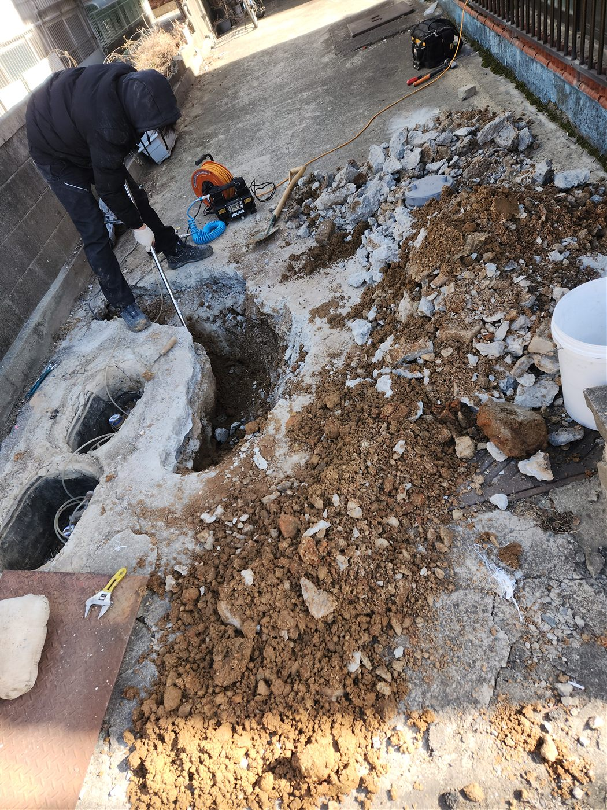
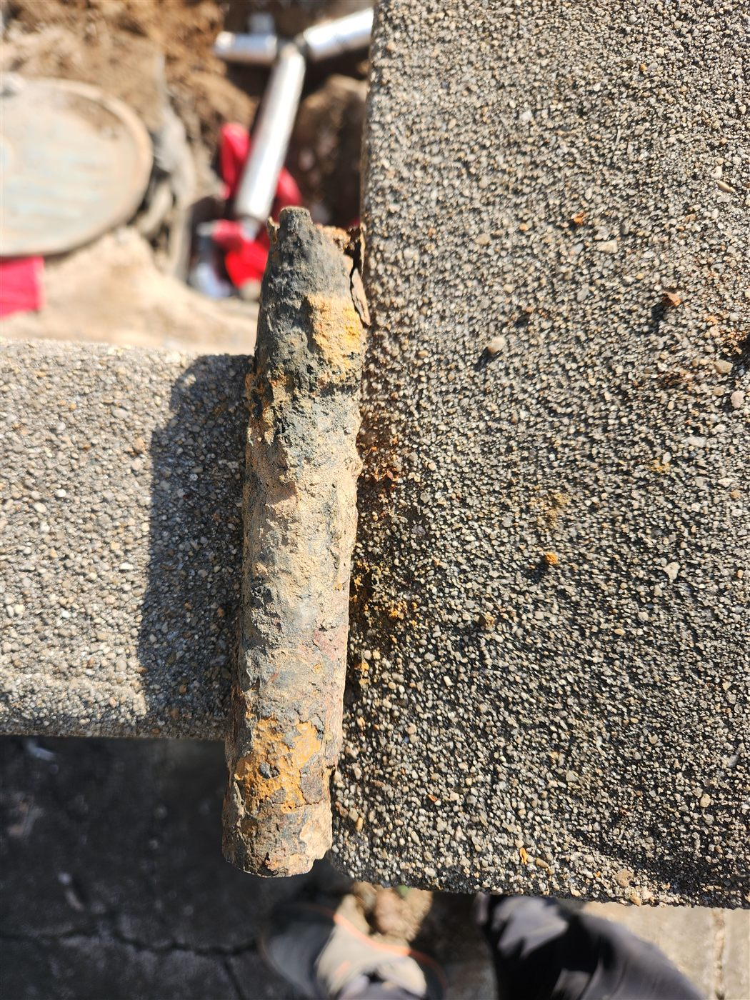
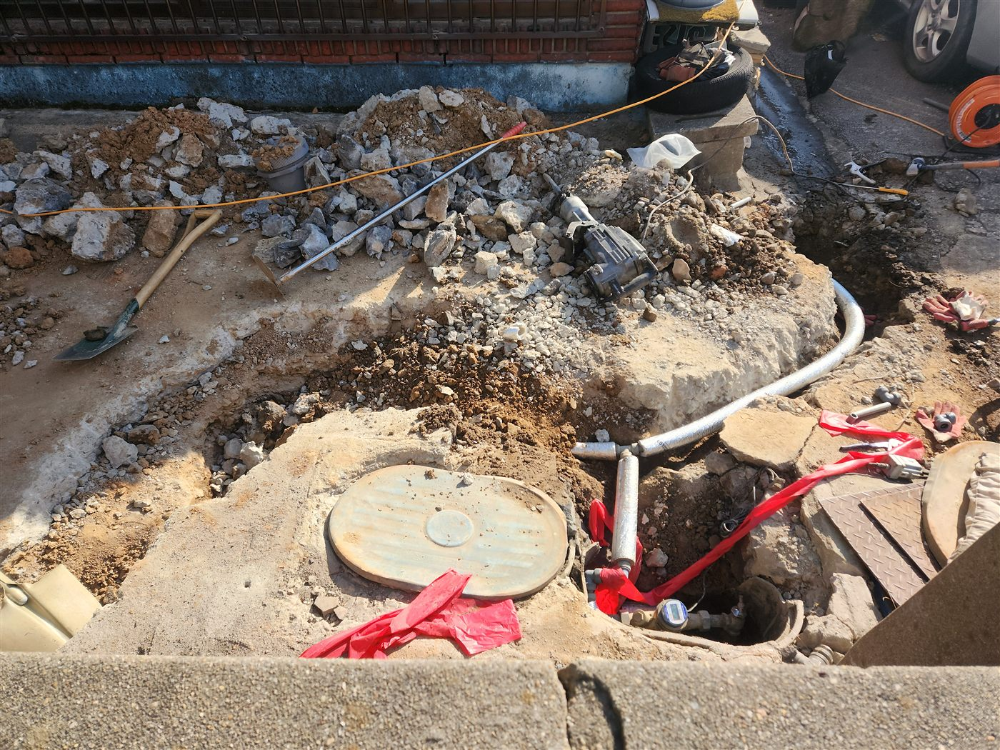
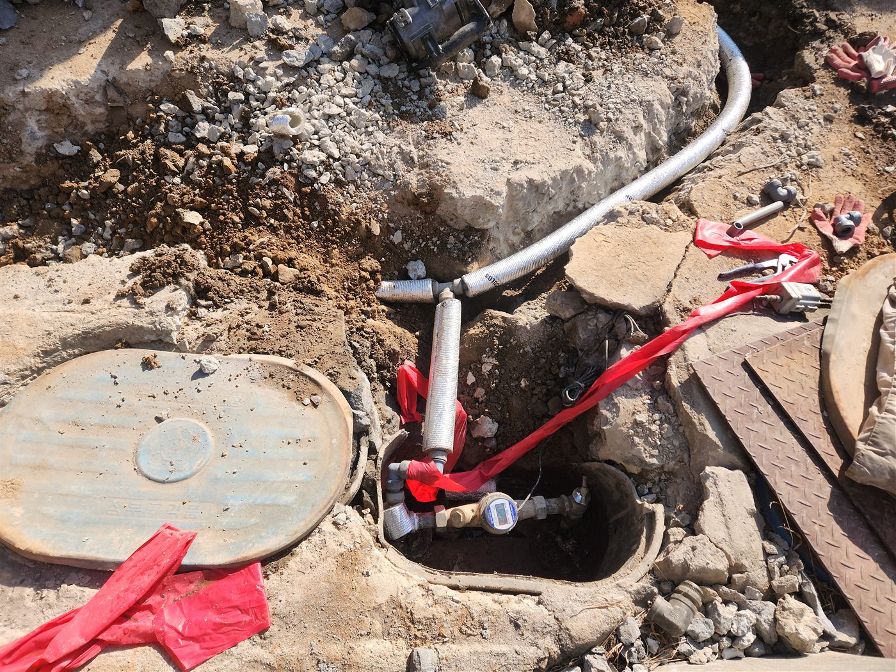

현장 상황
건물 바깥 수도계량기함 주변에서 물이 확인되는 외부누수 현장이었습니다. 외부 배관은 땅속에 묻혀 있어서, 계량기함 안쪽 상태와 배관이 지나가는 경로를 함께 살펴야 원인을 찾을 수 있습니다.
계량기함 확인
먼저 계량기함 덮개를 열어 내부를 확인했습니다. 계량기함 안에 물이 고여 있었고, 계량기와 배관 주변으로 물이 계속 차는 상태였습니다.


누수 위치 점검
계량기 주변 배관에 점검 장비를 대고 누수가 의심되는 지점을 확인했습니다. 수도를 쓰지 않는 상태에서 계량기가 움직이는지 보는 것도 외부누수를 가려내는 기본 확인 방법입니다.


굴착과 기존 배관 확인
누수 지점 주변의 포장과 흙을 걷어내며 배관 경로를 따라 파 들어갔습니다. 굴착 작업은 장비를 쓰는 만큼 주변 정리와 안전 확보를 함께 했습니다.



배관 교체와 복구
문제가 확인된 구간은 새 배관으로 교체해 계량기까지 다시 연결했습니다. 연결한 배관은 보온 처리했고, 작업 후 물이 새지 않는지 확인했습니다.


외부누수 점검 순서
외부누수는 보통 계량기함 내부 확인, 수도를 쓰지 않을 때 계량기 움직임 확인, 배관 경로 점검, 누수 지점 굴착 순서로 진행합니다. 수도를 모두 잠갔는데도 계량기가 움직인다면 계량기 이후 배관 어딘가에서 새고 있다는 뜻입니다. 굴착은 위치가 확인된 뒤에 마지막으로 하는 것이 불필요한 공사를 줄이는 방법입니다.
마무리
계량기함 주변이 자주 젖어 있거나 사용량이 평소보다 늘었다면 외부누수를 의심해 볼 수 있습니다. 방치하면 지반이 약해지거나 주변 구조물에 영향을 줄 수 있고, 겨울에는 고인 물이 얼어 배관이 더 상할 수 있습니다.
안성 공도읍을 비롯한 인근 지역에서 계량기함 주변 누수가 의심되시면 방문 점검을 먼저 받아보세요. 계량기 상태를 직접 확인한 뒤 굴착 여부를 판단해 안내해 드립니다.
접수 안내
비슷한 증상으로 문의하실 곳을 찾고 계신다면 전화로 접수해 주세요. 접수 건은 확인 후 신속하게 연결해 안내해 드리며, 현장 진단 후 견적에 동의하신 뒤에만 작업이 진행됩니다.